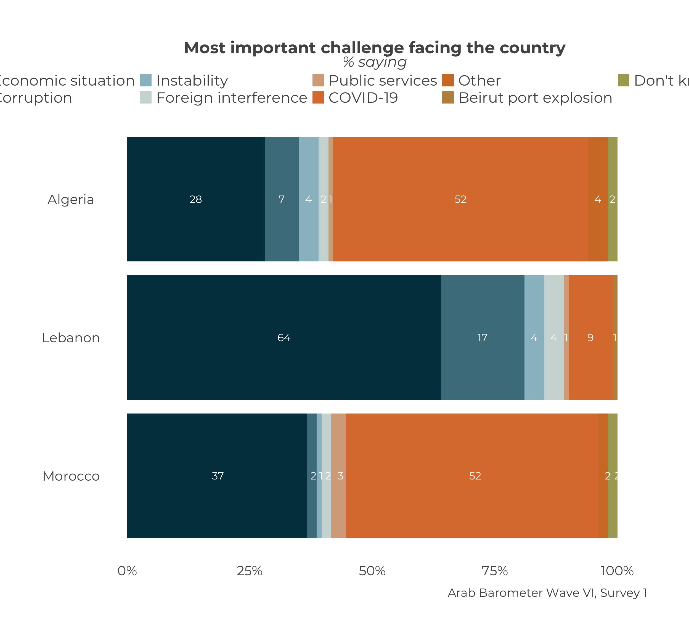
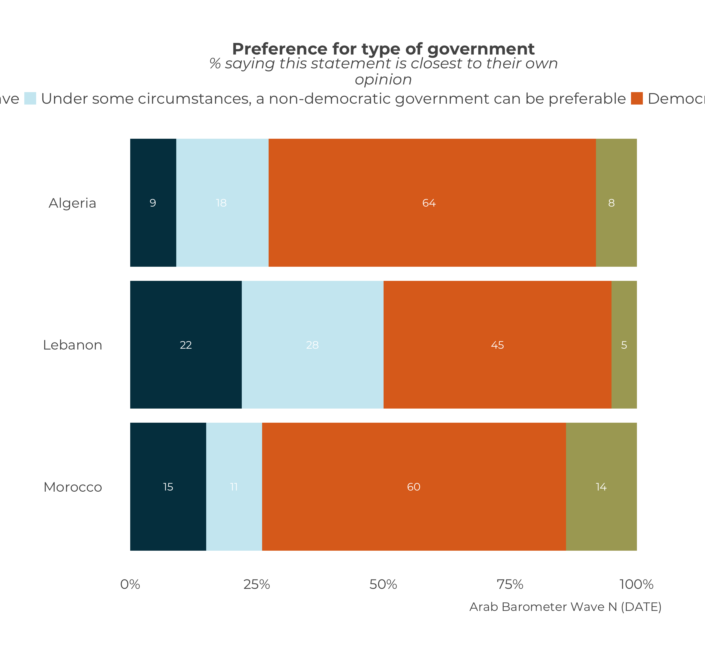
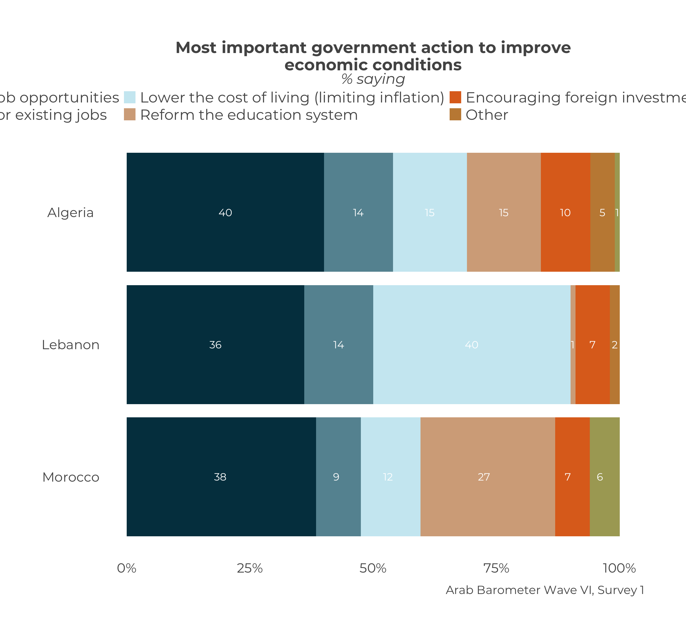

Chapter 10 Stacked Plots
Stacked bar graphs are very useful for displaying responses to nominal questions across countries. Unlike the graphs from Chapter 4, which can only compare one nominal category at a time across countries, a stacked bar graph allows the user to show the breakdown of responses to every category for each country.
At the end, your code will look like the following:
calculate_stacked_df(survey1,
"Q2061A") |>
plot_stacked_comp(.caption = "Arab Barometer Wave VI, Survey 1")That code will produce the following graph:

Let’s go!
10.1 Create a Single Graph
10.1.1 Create a Summary
As usual, the first step to creating a stacked bar graph is to summarize the data you want to display. To do this you use the calculate_stacked_df() function. This function requires two arguments: (1) an Arab Barometer data frame, and (2) the name of the variable you want to graph.
For this example, we’ll use the first survey of wave six and question Q2061A.
## # A tibble: 54 × 3
## # Groups: Country [6]
## Q2061A Country Percent
## <dbl+lbl> <chr> <dbl>
## 1 1 [Economic situation] Algeria 28
## 2 2 [Corruption] Algeria 7
## 3 6 [Instability] Algeria 4
## 4 7 [Foreign interference] Algeria 2
## 5 12 [Public services] Algeria 1
## 6 15 [COVID-19] Algeria 52
## 7 16 [Other] Algeria 4
## 8 17 [Beirut port explosion] Algeria 0
## 9 666 [Don't know/Refuse] Algeria 2
## 10 1 [Economic situation] Jordan 41
## # ℹ 44 more rowsThe data frame is quite long, as it contains the response of every category for every country. Let’s save it to an object we can graph in the next section.
10.1.2 Plot the Summary
Now that we have the data frame, the next step is to plot it. For this step we use the function plot_stacked_comp(). The only required input is a data frame.

Similar to many other plots in this guide, the caption is not automatically correct. Even though the data frame is the only required input, it is highly advised about correct the caption. Like always, this is done using the .caption parameter.

We can use the pipe operator5 to chain everything together.
calculate_stacked_df(survey1,
"Q2061A") |>
plot_stacked_comp(.caption = "Arab Barometer Wave VI, Survey 1")This code produces the graph we started with!

10.2 Create Many Graphs
Normally, stacked graphs tend to be one-offs, but on the off chance you need to make many of them, you can, with the help of the purrr package. The steps follow.
- Create an iterable object (read: list or vector) of variable you want to graph.
- Map your object onto the
calculate_stacked_df()function to create a list of summaries. - Map your list of summaries onto the
plot_stacked_comp()function to create a list of plots.
To be clear, there are many, many different ways to create code to accomplish the goal of creating many graphs at one time. The method suggested here is only one.
10.2.1 Identify the Variables
The first step to create many graphs is to identify all the variables you want to make graphs for. For this example, we’ll use Q2061A, Q118_1, and Q516A. We will save it to an object we can map to plot_stacked_comp().
We have save a vector of our three variables to an object called variables_2_plot. Next step is creating the summaries.
10.2.2 Create Many Summaries
The next step is to use the map() function from the purrr package to create a list of summaries. The map() function requires two arguments: (1) an iterable object (e.g., a list or vector), and (2) a function. In the case, our iterable object is variables_2_plot and our function is calculate_stacked_df().
summary_list <- map(
variables_2_plot, # List of variables
calculate_stacked_df # Function to map onto
)## Error in `map()`:
## ℹ In index: 1.
## Caused by error in `.ab[[.var]]`:
## ! subscript out of boundsOops. What went wrong? Take a moment to guess.
Did you guess that calculate_stacked_df() takes two arguments and only one is provided here? If so, you are correct!
The above code does not provide the data calculate_stacked_df() needs to create the data frame; specially survey1.
The data used to create these summaries is the same every time. That means even though we are changing the variables we want to create summaries for, we can hold the input data constant. You can do this in the map() function by including the name of the parameter you want to hold constant, and setting it equal to your constant input. The map() function knows to use that input for every variable.
summary_list <- map(
variables_2_plot, # List of variables
calculate_stacked_df, # Function to map onto
.ab = survey1 # Constant parameter
)Unlike the list produced produced when we created many summaries for single country overall plots, this list of summaries is not named. The list has three elements (one for each variable) called "1", "2", and "3". While not strictly necessary, it is useful to provide names for referencing later. Luckily, if you saved the names of the variables as a vector, you can set that vector as the names of the elements in the summary list6.
Now, you can look at each variable’s summary by referencing the variable name.
## # A tibble: 54 × 3
## # Groups: Country [6]
## Q2061A Country Percent
## <dbl+lbl> <chr> <dbl>
## 1 1 [Economic situation] Algeria 28
## 2 2 [Corruption] Algeria 7
## 3 6 [Instability] Algeria 4
## 4 7 [Foreign interference] Algeria 2
## 5 12 [Public services] Algeria 1
## 6 15 [COVID-19] Algeria 52
## 7 16 [Other] Algeria 4
## 8 17 [Beirut port explosion] Algeria 0
## 9 666 [Don't know/Refuse] Algeria 2
## 10 1 [Economic situation] Jordan 41
## # ℹ 44 more rows## # A tibble: 42 × 3
## # Groups: Country [6]
## Q118_1 Country Percent
## <dbl+lbl> <chr> <dbl>
## 1 1 [Create more job opportunities] Algeria 40
## 2 2 [Raise wages for existing jobs] Algeria 14
## 3 3 [Lower the cost of living (limiting inflation)] Algeria 15
## 4 4 [Reform the education system] Algeria 15
## 5 5 [Encouraging foreign investment] Algeria 10
## 6 6 [Other] Algeria 5
## 7 666 [Don't know/Refuse] Algeria 1
## 8 1 [Create more job opportunities] Jordan 39
## 9 2 [Raise wages for existing jobs] Jordan 18
## 10 3 [Lower the cost of living (limiting inflation)] Jordan 17
## # ℹ 32 more rows## # A tibble: 24 × 3
## # Groups: Country [6]
## Q516A Country Percent
## <dbl+lbl> <chr> <dbl>
## 1 1 [For people like me, it doesn't matter what kind … Algeria 9
## 2 2 [Under some circumstances, a non-democratic gover… Algeria 18
## 3 3 [Democracy is always preferable to any other kind… Algeria 64
## 4 666 [Don't know/Refuse] Algeria 8
## 5 1 [For people like me, it doesn't matter what kind … Jordan 16
## 6 2 [Under some circumstances, a non-democratic gover… Jordan 13
## 7 3 [Democracy is always preferable to any other kind… Jordan 59
## 8 666 [Don't know/Refuse] Jordan 13
## 9 1 [For people like me, it doesn't matter what kind … Lebanon 22
## 10 2 [Under some circumstances, a non-democratic gover… Lebanon 28
## # ℹ 14 more rowsExcellent. On to plotting.
10.2.3 Create Many Plots
Our next step is to take the list of summaries, and map it onto the function plot_stacked_df(). This will create a list of plots. We will save it to an object plot_list.
This mapping worked without any extra inputs because plot_stacked_comp() requires only one input.
We can also see that the names of summary list carried through.
## [1] "Q2061A" "Q118_1" "Q516A"To look at each plot, we can simply call them by name.
 Hopefully you notice that just like when we created our first stacked plot with only the stacked data frame as an input, the caption needs to be set.
The caption should be the same for every graph here. Since the input is constant, we can set that in the map() function just as we did with the data frame input in the previous section.
Now, all plots should have the same caption. We can verify that by calling each of them.


And there you have it! We have created many stacked plots! All together, the code looks like the following:
10.3 Extras
10.3.1 Long Legends
You may have noticed the legends of many of these plots running off the page. Take the original stacked graph for Q2061A for example.

Two rows does not seem to be enough to see all the categories in the legend. You can fix that with the guides() function from the ggplot2 package.
plot_stacked_comp(stacked_data_frame,
.caption = "Arab Barometer Wave VI, Survey 1") +
guides(fill = guide_legend(nrow = 3))
The input to the guides() function should be thought of as follows: “For the fill legend, use three rows.” You can change the number as you see fit.
10.3.2 Font Size
Another way to get all the text to be visible is to change the font size. You can read how to do that in the chapter on changing the font size.
10.3.3 Colors
You can learn how to change the colors for the stacked graph in the chapter on changing graph colors.
10.3.4 Order
You can learn how to change the order for a stacked graph in the chapter on changing the order for a stacked graph.
To learn more about piping and using
%>%in programming, see A Note on Piping in theArabBarometRguide.↩︎This only works if the variables are in a vector, not a list↩︎